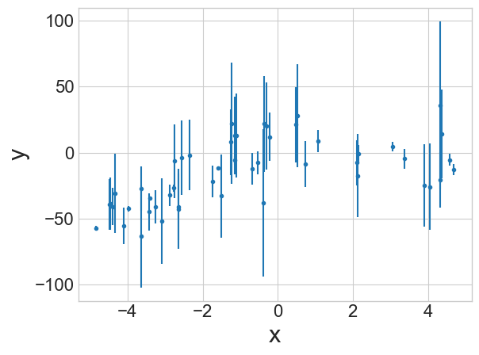

Jed Rembold
April 10, 2025
The prior dictates the probability of a parameter having a particular value, regardless of the data
If using an unbounded, flat, prior, then it should just return 1 always (0 in ln-space)
If bounded, check the parameters and return 1 (0 in ln-space) if
within the bounds or \(-\infty\)
otherwise (-np.inf in Python,
-Inf in R)
Pseudo-example:
|||function ln_prior(|||params|||)|||
if |||illegal condition|||
return -|||infinity|||
return 0|||function ln_prior(|||params|||)|||
if |||legal condition|||
return 0
return -|||infinity|||The ln-likelihood then could look like:
|||function ln_likelihood(|||params, data|||)|||
m,b = params
x,y,errY = data # extract data
y_model = m * x + b # compute model result
residual = y - y_model # compute the difference
term1 = - 0.5 * |||log|||(2 * |||pi||| * errY ** 2)
term2 = - 0.5 * (y - y_model) ** 2 / errY ** 2 )
return |||sum|||(term1 + term2)Bring both pieces together (since we don’t care about \(P(D)\)):
|||function ln_pdf(|||params, data|||)|||
p = |||call ln_prior|||
if p == -|||infinity||| # no sense continuing
return -|||infinity|||
return p + ln_likelihood(params, data)Suppose we want to evaluate the uncertainties in our parameters for a fit to the data to the right.
Our model will look something like: \[y = ax^2 + bx\]
MCMC does not tell you about the quality of a fit. It tells you about the variability in the fit parameters.

axis=0emcee package, which you will probably need
to install through pipEmcee operates as an abstract data type,
wherein you create a sampling object and then can interact with it and
run samples using defined methodsmcmc
package, which also seems reasonably strong, though it doesn’t seem to
have all of the flexibility of emceesampler = emcee.EnsembleSampler(
num_walkers, num_dims,
log_function, args=[extra arguments]
)You can then start a sampling run by telling the sampler where all the walkers should begin and how many steps they should take
Generating starting points usually done with some variation of a random gaussian near a starting point:
starts = np.random.multivariate_normal(
mean = [0,1,10],
cov = [[1,0,0],[0,0.5,0], [0,0,5]],
size = num_dims
)Then you can just run the sampler:
sampler.run_mcmc(starts, num_iterations)You can get the iteration chains back from the sampler after a
run using .get_chain()
This will usually return a 3D array, indexing over the parameter, walker, and iteration
Can visualize a particular parameter over all walkers using
plt.plot(sampler.get_chain()[:,:,0], 'k', alpha=0.3)After examining, will commonly want to discard the burn in and flatten all the individual walkers:
flat_samples = sampler.get_chain(discard=num_dis,
flat=True)